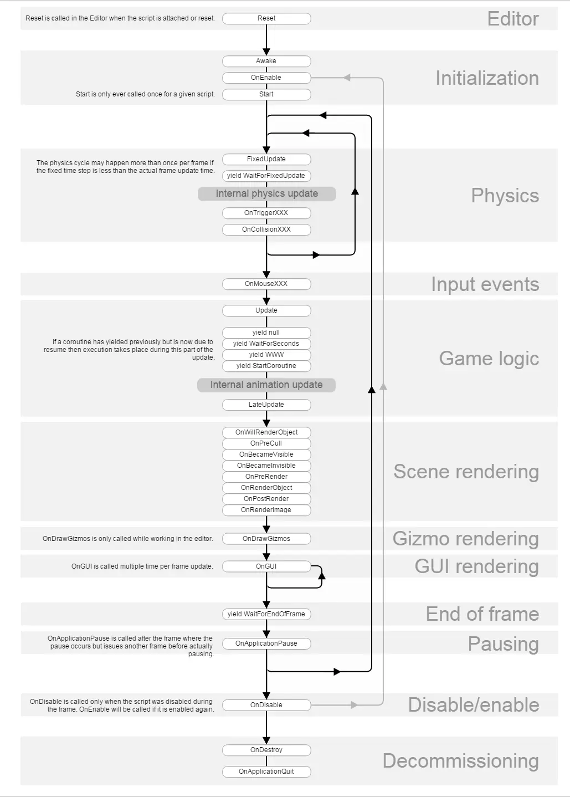

Unity生命周期函数
在Unity3D中，生命周期函数指的是MonoBehaviour脚本中定义的一系列方法，它们在游戏对象的生命周期中自动被调用。
编辑器（Editor）
Reset： Reset函数被用来初始化脚本属性。当脚本第一次被附加到对象上，或用户点击Inspector面板上Reset按钮时，会被调用。
第一次场景加载（First Scene Load）
这些函数会在一个场景开始时被调用。Awake： 当对象被实例化时，Awake被调用。这意味着Awake总是在Start之前被调用。如果游戏对象在启动期间处于非活动状态,则在激活之后才会调用 Awake。且只要物体被实例化，无论挂载脚本是否被激活，都会调用AwakeOnEnable： 当对象被激活时调用。可以多次调用，每当对象被激活时都会执行。
第一帧更新之前（Before the first frame update）
Start： 只要脚本实例被启用了Start()函数将会在Update()函数第一帧之前被调用。
在帧之间（In between frames）
OnApplicationPause： 在应用程序暂停和恢复时被调用。
更新顺序（Update Order）
FixedUpdate： 以固定的时间间隔调用，通常与物理计算（如刚体的移动和碰撞检测）一起使用。Update： 每一帧都会调用。LateUpdate： 在所有Update调用之后调用。用于执行依赖于其他物体Update结果的逻辑。
注意：如果你需要处理玩家输入、游戏逻辑更新、UI更新等，通常使用 Update。
如果你需要进行物理计算，如更新刚体的位置或处理碰撞，应该使用 FixedUpdate
在Update阶段
OnMouseDown: 当用户在具有 Collider 组件的游戏对象上按下鼠标按钮时触发。OnMouseUp 当用户在具有 Collider 组件的游戏对象上释放鼠标按钮时触发。OnMouseEnter： 当鼠标光标进入游戏对象的 Collider 边界时触发。OnMouseOver： 当鼠标光标停留在游戏对象的 Collider 上时，每帧触发一次。OnMouseExit： 当鼠标光标离开游戏对象的 Collider 边界时触发。OnMouseUpAsButton： 当鼠标在同一个游戏对象上按下并释放时触发，用于检测“点击”事件。OnMouseDrag： 当用户按下鼠标按钮并在游戏对象上拖动时每帧触发一次。
在FixedUpdate阶段
OnTriggerXXX： 当其他碰撞器进入触发器时调用此函数。OnCollisionXXX： 当此碰撞器与其他碰撞器碰撞开始时调用此函数。
场景渲染（Scene Rendering）
OnWillRenderObject： 在相机渲染场景之前调用。可用于在对象被渲染之前调整属性。OnPreCull： 在相机剔除场景前被调用。剔除是用来决定哪些物体需要被渲染。OnBecameVisible/OnBecameInvisible： 当一个物体对任意摄像机变得可见/不可见时被调用。OnPreRender： 在摄像机开始渲染场景之前调用。OnRenderObject： 当相机渲染场景的过程中调用。OnPostRender： 在摄像机完成场景渲染之后调用。OnRenderImage： 当相机完成场景渲染，并且图像即将显示到屏幕之前，对渲染结果图像进行处理。OnGUI： 用于处理图形用户界面（GUI）事件。这个函数在每帧中可以被多次调用以响应不同的用户界面需求，如按钮点击或显示文本。OnDrawGizmos： 函数用于在 Unity 编辑器中绘制辅助图形（Gizmos）
协同程序（Coroutines）
StartCoroutine： 用于启动协同程序。协同程序允许在游戏中进行异步操作。yield： 在所有的Update函数都已经被调用的下一帧该协程将持续执行。yield WaitForSeconds： 一段指定的时间延迟之后继续执行，在所有的Update函数完成调用的那一帧之后。yield WaitForFixedUpdate： 暂停当前协同程序的执行，直到下一个物理更新（FixedUpdate）周期。yield UnityWebRequest： 在下载完成之后继续。
销毁（Destroyed）
OnDestory: 当对象被销毁时调用
退出游戏（When Quitting）
OnApplicationQuit： 在应用退出前调用。如果是在编辑器则退出编辑器，在游戏则退出游戏。OnDisable： 当脚本被禁用时调用。
脚本的生命周期流程图
